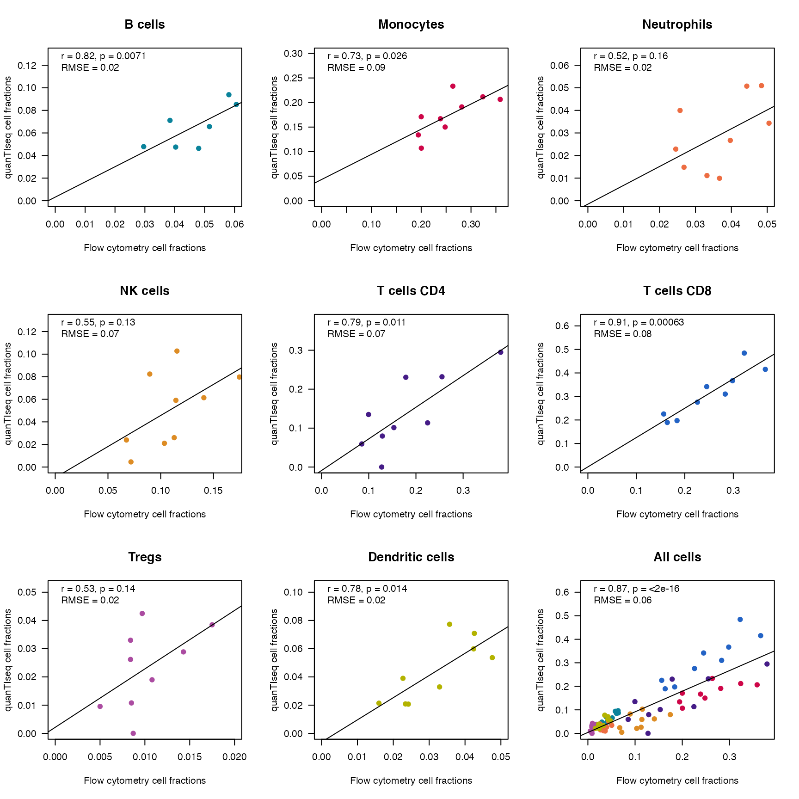
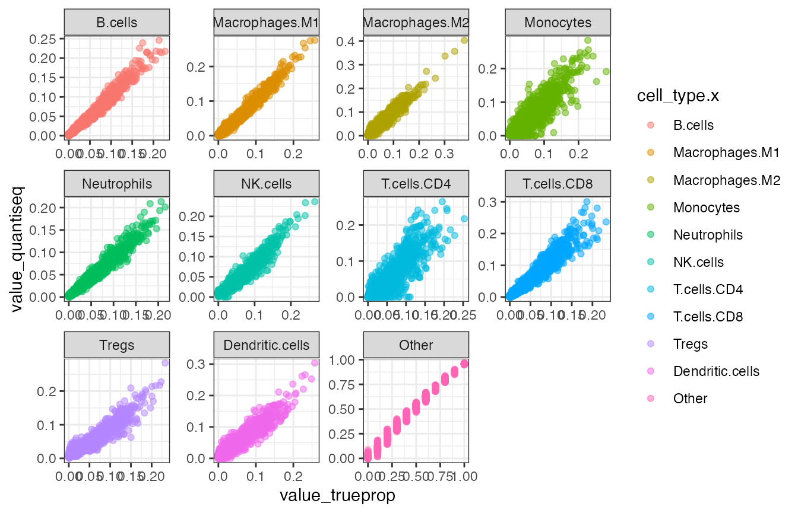

Using quantiseqr
Federico Marini1
Institute of Medical Biostatistics, Epidemiology and Informatics (IMBEI, Mainz)Francesca Finotello2
Institute of Bioinformatics, Biocenter Medical University of Innsbruck (https://icbi.i-med.ac.at/index.html)2021-04-24
using_quantiseqr.RmdIntroduction
This vignette describes how to use the quantiseqr package for streamlining your workflow around the quanTIseq method. This was developed to perform the quantification of the Tumor Immune contexture from RNA-seq data. The TIL10 signature, designed in this context, is used to dissect the contributions of ten immune cell types, and has bee carefully crafted from a collection of human RNA-seq samples. The TIL10 signature has been extensively validated using simulated, flow cytometry, and immunohistochemistry data.
Getting started
To install this package, start R and enter:
if (!requireNamespace("BiocManager", quietly = TRUE)) {
install.packages("BiocManager")
}
BiocManager::install("quantiseqr")Once installed, the package can be loaded and attached to your current workspace as follows:
library("quantiseqr")In the following chunk, we load a set of additional packages that will be required throughout this vignette.
library("dplyr")
library("ggplot2")
library("tidyr")
library("tibble")
library("GEOquery")
library("reshape2")In order to use quantiseqr in your workflow, one fundamental input is required, to be provided to run_quantiseqr() as expression_data. This is an object containing the TPM expression values for the measured features, and can be provided in different ways:
- as a simple gene expression matrix, or a data frame (with HGNC gene symbols as row names and sample identifiers as column names)
- as an
ExpressionSetobject (from the Biobase package), where the HGNC gene symbols are provided in a column of thefDataslot - as a
SummarizedExperimentobject, or any of the derivative classes (e.g. DESeq2’sDESeqDataSet), in which the assay (default: “abundance”) is containing the TPMs as expected
Some use cases for quantiseqr
In this section, we illustrate the usage of quantiseqr on a variety of datasets. These differ with respect to their size and samples of origin, and we illustrate how the different parameters of quantiseqr should be set in the different scenarios.
The fundamental input for quantiseqr is a gene expression matrix-like object, with features on the rows, and samples as the columns. quantiseqr can also directly handle SummarizedExperiment objects, as well as ExpressionSet objects, commonly used for microarray data. In case a SummarizedExperiment object is passed, the quantifications of the immune contexture can be directly returned extending the colData of the provided input.
Use case 1: Metastatic melanoma patients (Racle et al 2017)
quantiseqr ships with an example dataset with samples from four patients with metastatic melanoma published in (Racle et al. 2017).
The dataset quantiseqr::dataset_racle contains - a gene expression matrix (dataset_racle$expr_mat) generated using bulk RNA-seq - ‘gold standard’ estimates of immune cell contents profiled with FACS (dataset_racle$ref).
We are going to use the bulk RNA-seq data to run the deconvolution methods and will compare the results to the FACS data in the following steps.
Let’s inspect the expression matrix first:
data("dataset_racle")
dim(dataset_racle$expr_mat)
#> [1] 32467 4
knitr::kable(dataset_racle$expr_mat[1:5, ])| LAU125 | LAU355 | LAU1255 | LAU1314 | |
|---|---|---|---|---|
| A1BG | 0.82 | 0.58 | 0.81 | 0.71 |
| A1CF | 0.00 | 0.01 | 0.00 | 0.00 |
| A2M | 247.15 | 24.88 | 2307.94 | 20.30 |
| A2M-AS1 | 1.38 | 0.20 | 2.60 | 0.28 |
| A2ML1 | 0.03 | 0.00 | 0.05 | 0.02 |
The quantification of the immune cell types with quantiseqr can be done as in the chunk below:
ti_racle <- quantiseqr::run_quantiseq(
expression_data = dataset_racle$expr_mat,
signature_matrix = "TIL10",
is_arraydata = FALSE,
is_tumordata = TRUE,
scale_mRNA = TRUE
)
#>
#> Running quanTIseq deconvolution module
#> Gene expression normalization and re-annotation (arrays: FALSE)
#> Removing 17 noisy genes
#> Removing 15 genes with high expression in tumors
#> Signature genes found in data set: 135/138 (97.83%)
#> Mixture deconvolution (method: lsei)
#> Deconvolution successful!The call above means that we are passing the expression data as simple matrix (in dataset_racle$expr_mat) and quantifying the tumor immune contexture using the (default) TIL10 signature. This is a dataset stemming from tumor RNA-seq samples (therefore the values specified for is_tumordata and is_arraydata). With scale_mRNA set to TRUE, we are performing the correction of cell-type-specific mRNA content bias.
The output of quantiseqr can be further processed and represented in a tabular or visual manner to facilitate the comparisons across samples/conditions.
The scores returned by quantiseqr can be interpreted as a cell-type fraction, making it possible to represent them as a stacked bar chart.
quantiplot(ti_racle)
We observe that
- two samples (LAU355, LAU1314) appear to contain a large amount of CD4+ T cells and B cells
- the other two samples (LAU1255, LAU125) appear to contain a large amount of “uncharacterized cells”
- one sample (LAU125) appears to contain no CD8+ T cells, often associated with bad prognosis.
Estimating the amount of “uncharacterized cells” is a novel feature introduced by quanTIseq and EPIC (Finotello et al. 2019, @EPIC2017). This estimate often corresponds to the fraction of tumor cells in the sample.
Use case 2: PBMCs from GSE107572 (Finotello et al 2019)
Here we show how to use quantiseqr to deconvolute blood-derived immune-cell mixtures (Finotello et al. 2019), for which also matching flow cytometry data are available.
This is also presented as an example in (Plattner, Finotello, and Rieder 2020), please refer to this later publication for additional details on the processing steps.
The example dataset is available online at the Gene Expression Omnibus (accession number GSE107572), and is provided as preprocessed RNA-seq data from blood-derived immune-cell mixtures from nine healthy donors.
Flow cytometry estimates for the according immune subpopulations are also available
## While downloading by hand is possible, it is recommended to use GEOquery
# wget -c ftp://ftp.ncbi.nlm.nih.gov/geo/series/GSE107nnn/GSE107572/suppl/GSE107572%5Ftpm%5FPBMC%5FRNAseq%2Etxt%2Egz
# unzip GSE107572_tpm_PBMC_RNAseq.txt.gz
# read.table("GSE107572_tpm_PBMC_RNAseq.txt", header = TRUE)
# downloading the supplemental files on the fly
tpminfo_GSE107572 <- getGEOSuppFiles("GSE107572",
baseDir = tempdir(),
filter_regex = "GSE107572_tpm_PBMC_RNAseq"
)
tpm_location <- rownames(tpminfo_GSE107572)[1]
tpm_location
#> [1] "/var/folders/24/8k48jl6d249_n_qfxwsl6xvm0000gn/T//Rtmp768T85/GSE107572/GSE107572_tpm_PBMC_RNAseq.txt.gz"
tpmdata <- read.table(tpm_location, header = TRUE)
tpm_genesymbols <- tpmdata$GENE
tpmdata <- as.matrix(tpmdata[, -1])
rownames(tpmdata) <- tpm_genesymbols
ti_PBMCs <- quantiseqr::run_quantiseq(
expression_data = tpmdata,
signature_matrix = "TIL10",
is_arraydata = FALSE,
is_tumordata = FALSE,
scale_mRNA = TRUE
)
#>
#> Running quanTIseq deconvolution module
#> Gene expression normalization and re-annotation (arrays: FALSE)
#> Removing 17 noisy genes
#> Signature genes found in data set: 149/153 (97.39%)
#> Mixture deconvolution (method: lsei)
#> Deconvolution successful!To obtain an overview on the cell type compositions, we can print out the result and plot that with the conveniente quantiplot wrapper:
ti_PBMCs
#> Sample B.cells Macrophages.M1
#> pbmc_1 pbmc_1 0.09386998 0
#> pbmc_10 pbmc_10 0.09625346 0
#> pbmc_12_merged_1.fastq pbmc_12_merged_1.fastq 0.06564512 0
#> pbmc_2_merged_1.fastq pbmc_2_merged_1.fastq 0.04788587 0
#> pbmc_4 pbmc_4 0.07113262 0
#> pbmc_5_merged_1.fastq pbmc_5_merged_1.fastq 0.08526253 0
#> pbmc_6_merged_1.fastq pbmc_6_merged_1.fastq 0.08695852 0
#> pbmc_7_merged_1.fastq pbmc_7_merged_1.fastq 0.04749548 0
#> pbmc_9_merged_1.fastq pbmc_9_merged_1.fastq 0.04637309 0
#> Macrophages.M2 Monocytes Neutrophils NK.cells
#> pbmc_1 0.017214191 0.1709194 0.022854647 0.023960144
#> pbmc_10 0.009658902 0.2064216 0.026710342 0.004535281
#> pbmc_12_merged_1.fastq 0.010348082 0.1070846 0.014807965 0.061400801
#> pbmc_2_merged_1.fastq 0.016706096 0.1500564 0.050937018 0.026005414
#> pbmc_4 0.002411796 0.1339592 0.009949874 0.102721684
#> pbmc_5_merged_1.fastq 0.007025086 0.2333513 0.011131749 0.082349782
#> pbmc_6_merged_1.fastq 0.018465121 0.2116348 0.050735601 0.021043316
#> pbmc_7_merged_1.fastq 0.019879914 0.1669343 0.034329149 0.079715496
#> pbmc_9_merged_1.fastq 0.017734011 0.1910473 0.039968231 0.059074869
#> T.cells.CD4 T.cells.CD8 Tregs Dendritic.cells
#> pbmc_1 0.29483429 0.2254946 0.038462244 0.02140064
#> pbmc_10 0.23050466 0.1973788 0.033000355 0.03900199
#> pbmc_12_merged_1.fastq 0.10126385 0.3668420 0.009534643 0.07088375
#> pbmc_2_merged_1.fastq 0.23184199 0.1894586 0.028859312 0.02085107
#> pbmc_4 0.11342624 0.3417581 0.042472502 0.07729367
#> pbmc_5_merged_1.fastq 0.05931314 0.4153910 0.026181427 0.05987356
#> pbmc_6_merged_1.fastq 0.13491730 0.3102470 0.018981104 0.02072611
#> pbmc_7_merged_1.fastq 0.00000000 0.4843902 0.000000000 0.03288725
#> pbmc_9_merged_1.fastq 0.07959930 0.2757124 0.010779655 0.05363633
#> Other
#> pbmc_1 0.09098993
#> pbmc_10 0.15653461
#> pbmc_12_merged_1.fastq 0.19218912
#> pbmc_2_merged_1.fastq 0.23739827
#> pbmc_4 0.10487431
#> pbmc_5_merged_1.fastq 0.02012044
#> pbmc_6_merged_1.fastq 0.12629107
#> pbmc_7_merged_1.fastq 0.13436824
#> pbmc_9_merged_1.fastq 0.22607486
quantiplot(ti_PBMCs)
Notably, for these samples, corresponding quantifications of the true cell fractions done by flow cytometry are also available.
In the chunk that follows, we retrieve that information and generate scatter plots to display how the estimated values from quantiseqr correlate with the ground truth values.
This is adapted by (Plattner, Finotello, and Rieder 2020) to match the output format generated by quantiseqr - and can be used as a template in case other types of matched ground-truth information are available.
GEOid <- "GSE107572"
gds <- getGEO(GEOid)
#> Found 1 file(s)
#> GSE107572_series_matrix.txt.gz
#>
#> ── Column specification ────────────────────────────────────────────────────────
#> cols(
#> ID_REF = col_character(),
#> GSM2871599 = col_character(),
#> GSM2871600 = col_character(),
#> GSM2871601 = col_character(),
#> GSM2871602 = col_character(),
#> GSM2871603 = col_character(),
#> GSM2871604 = col_character(),
#> GSM2871605 = col_character(),
#> GSM2871606 = col_character(),
#> GSM2871607 = col_character()
#> )
#> File stored at:
#> /var/folders/24/8k48jl6d249_n_qfxwsl6xvm0000gn/T//Rtmp768T85/GPL16791.soft
GEOinfo <- pData(gds[[1]])
FACSdata <- data.frame(
B.cells = GEOinfo$`b cells:ch1`,
T.cells.CD4 = GEOinfo$`cd4+ t cells:ch1`,
T.cells.CD8 = GEOinfo$`cd8+ t cells:ch1`,
Monocytes = GEOinfo$`monocytes:ch1`,
Dendritic.cells = GEOinfo$`myeloid dendritic cells:ch1`,
NK.cells = GEOinfo$`natural killer cells:ch1`,
Neutrophils = GEOinfo$`neutrophils:ch1`,
Tregs = GEOinfo$`tregs:ch1`
)
rownames(FACSdata) <- gsub(
"Blood-derived immune-cell mixture from donor ", "pbmc", GEOinfo$title
)
rownames(ti_PBMCs) <- gsub("_.*$", "", sub("_", "", rownames(ti_PBMCs)))
ccells <- intersect(colnames(ti_PBMCs), colnames(FACSdata))
csbjs <- intersect(rownames(ti_PBMCs), rownames(FACSdata))
ti_PBMCs <- ti_PBMCs[csbjs, ccells]
FACSdata <- FACSdata[csbjs, ccells]
palette <- c("#451C87", "#B3B300", "#CE0648", "#2363C5", "#AB4CA1", "#0A839B", "#DD8C24", "#ED6D42")
names(palette) <- c("T.cells.CD4", "Dendritic.cells", "Monocytes", "T.cells.CD8", "Tregs", "B.cells", "NK.cells", "Neutrophils")
par(mfrow = c(3, 3))
colall <- c()
for (i in 1:(ncol(ti_PBMCs) + 1)) {
if (i <= ncol(ti_PBMCs)) {
x <- as.numeric(as.character(FACSdata[, i]))
y <- ti_PBMCs[, i]
ccell <- colnames(ti_PBMCs)[i]
col <- palette[ccell]
} else {
x <- as.numeric(as.vector(as.matrix(FACSdata)))
y <- as.vector(as.matrix(ti_PBMCs))
ccell <- "All cells"
col <- colall
}
res.cor <- cor.test(y, x)
R <- round(res.cor$estimate, digits = 2)
p <- format.pval(res.cor$p.value, digits = 2)
RMSE <- round(sqrt(mean((y - x)^2, na.rm = TRUE)), digits = 2)
regl <- lm(y ~ x)
ymax <- max(round(max(y), digits = 2) * 1.3, 0.01)
xmax <- max(round(max(x), digits = 2), 0.01)
plot(x, y,
main = gsub("(\\.)", " ", ccell), pch = 19,
xlab = "Flow cytometry cell fractions",
ylab = "quanTIseq cell fractions",
col = col, cex.main = 1.3, ylim = c(0, ymax), xlim = c(0, xmax), las = 1
)
abline(regl)
text(0, ymax * 0.98, cex = 1, paste0("r = ", R, ", p = ", p), pos = 4)
text(0, ymax * 0.9, cex = 1, paste0("RMSE = ", RMSE), pos = 4)
colall <- c(colall, rep(col, length(x)))
}
Use case 3: Expression changes in Melanomas pre MAPKi treatment vs. on MAPKi treatment - GSE75299 (Song et al 2017)
We use here the dataset provided in (Song et al. 2017), where patients and cell lines, before and on treatment with MAPK inhibitors are quantified with RNA-seq.
The original dataset is available via GEO at the accession GSE75299, but we will be loading a preprocessed version of it, containing the TPM expression values, made available via ExperimentHub.
This will enable us to performed a paired analysis on the same observation units (the patients) to appreciate differences in the cell proportions induced by the MAPKi treatment.
data_already_on_ehub <- FALSE
### WAS...
tpmdata <- read.table(
system.file("extdata", "tpm_GSE75299.txt.gz", package = "quantiseqr"),
header = TRUE
)
### WILL BE...
library("ExperimentHub")
eh <- ExperimentHub()
quantiseqdata_eh <- query(eh, "quantiseqrData")
se_Song2017_MAPKi_treatment <- quantiseqdata_eh[["EH123"]] # will be edited
#### tpm_genesymbols <- tpmdata$GENE
#### tpmdata <- as.matrix(tpmdata[, -1])
#### rownames(tpmdata) <- tpm_genesymbols
#### ti_quant <- quantiseqr::run_quantiseq(
#### expression_data = se_Song2017_MAPKi_treatment,
#### signature_matrix = "TIL10",
#### is_arraydata = FALSE,
#### is_tumordata = TRUE,
#### scale_mRNA = TRUE
#### )
Song2017_MAPKi_treatment_tiquant <- quantiseqr::run_quantiseq(
expression_data = Song2017_MAPKi_treatment,
signature_matrix = "TIL10",
is_arraydata = FALSE,
is_tumordata = TRUE,
scale_mRNA = TRUE
)
dim(Song2017_MAPKi_treatment_tiquant)
colData(Song2017_MAPKi_treatment_tiquant)
colnames(colData(Song2017_MAPKi_treatment_tiquant))
# download.file(
# url = paste0("http://trace.ncbi.nlm.nih.gov/Traces/sra/sra.cgi?save=efetch&db=sra&rettype=runinfo&term=",
# "SRP066571"),
# destfile = "SRP066571runtable.txt",quiet = TRUE)
### Load file with estimated cell fractions by quanTIseq:
cdata <- # read.csv(paste0(path, "/SRP066571_cell_fractions.txt"), header = TRUE, sep = "\t", stringsAsFactors = FALSE, row.names = 1)
ti_quant
Song2017_MAPKi_treatment_tiquant
ti_quant <- quantiseqr::extract_ti_from_se(Song2017_MAPKi_treatment_tiquant)
## this will be adjusted!
### Annotation
gds <- getGEO("GSE75299")
pdata <- pData(gds[[1]])
sraInfo <- read.csv(
system.file("extdata", "SRP066571runtable.txt", package = "quantiseqr"),
header = TRUE, sep = ",", stringsAsFactors = FALSE
)
cdata <- cbind(cdata, sraInfo[, "SampleName"][match(rownames
(cdata), sraInfo$Run)])
colnames(cdata)[length(cdata)] <- "geo_accession"
dim(pdata)
pdata <- pdata[grep("^Pt", pdata[, 1]), ]
pt_matchedinfo <- pdata[, "title"][match(cdata$geo_accession, pdata$geo_accession)]
cdata$pt_info <- pt_matchedinfo
# rownames(cdata) <- cdata[, length(cdata)]
cdata$groups <- "POST"
cdata$groups[grep("baseline", cdata$pt_info)] <- "PRE"
class(cdata)
cdata
cellfracs <- tidyr::pivot_longer(cdata, cols = B.cells:Other)
cellfracs$name <- factor(cellfracs$name,
levels = c(
"B.cells", "Macrophages.M1", "Macrophages.M2",
"Monocytes", "Neutrophils", "NK.cells",
"T.cells.CD4", "T.cells.CD8", "Tregs",
"Dendritic.cells", "Other"
)
)
ggplot(cellfracs, aes(fill = name, y = value, x = Sample)) +
geom_bar(position = "fill", stat = "identity") +
scale_fill_brewer(palette = "PuOr") +
# viridis::scale_fill_viridis(discrete = TRUE) +
xlab("") +
ylab("Cell Fractions") +
theme_minimal() +
theme(axis.text.x = element_text(angle = 45, hjust = 1))
prepost_data <- cdata[!is.na(cdata$pt_info), ]
prepost_data <- prepost_data[-grep("Other", colnames(prepost_data))]
### Remove other cells and the last two columns
# cdata <- cdata[, -grep("Other", colnames(cdata))]
# cdata <- cdata[, -grep("geo_accession", colnames(cdata))]
prepost_data <- pivot_longer(prepost_data, cols = B.cells:Dendritic.cells)
prepost_data$groups <- factor(prepost_data$groups, levels = c("PRE", "POST"))
prepost_data$name <- factor(prepost_data$name,
levels = c(
"B.cells", "Macrophages.M1", "Macrophages.M2",
"Monocytes", "Neutrophils", "NK.cells",
"T.cells.CD4", "T.cells.CD8", "Tregs",
"Dendritic.cells"
)
)
ggplot(prepost_data, aes(name, value, fill = groups)) +
geom_boxplot() +
xlab("") +
ylab("cell fractions") +
theme_bw() +
theme(axis.text.x = element_text(angle = 45, hjust = 1))
# +
# stat_compare_means(aes(group = groups),
# symnum.args = list(cutpoints = c(0, 0.001, 0.01, 0.05, 0.1, 1), symbols = c("****", "***", "**", "*", "ns")),
# label = "p.signif",
# hide.ns = TRUE, cex = 10
# ) # default: Wilcoxon TestUse case 4: Running on simulated data for validation
We will now display the performance of quantiseqr on a dataset for which the ground truth parameters are known.
The large simulated dataset represents the RNA-seq expression data from breast tumors with different immune-infiltration scenarios, consisting of a total of 1700 samples, that were generated by mixing RNA-seq reads from purified immune cell types and from a MCF7 breast tumor cell line.
These samples were generated considering different immune relative cell proportions, tumor purity values (0:10:100%), and at different sequencing depths (1, 2, 5, 10, 20, 50, and 100 million read pairs).
Please refer to https://icbi.i-med.ac.at/software/quantiseq/doc/ and to (Finotello et al. 2019) for more details.
This dataset is coupled with a table where the original information on the used true fractions is available, and can be used to benchmark the performance of the deconvolution algorithm.
# downloading first the file from https://icbi.i-med.ac.at/software/quantiseq/doc/downloads/quanTIseq_SimRNAseq_mixture.txt
# https://icbi.i-med.ac.at/software/quantiseq/doc/
tpm_1700mixtures <- readr::read_tsv("quanTIseq_SimRNAseq_mixture.txt.gz")
dim(tpm_1700mixtures)
# extracting the gene names, restructuring the matrix by dropping the column
tpm_genesymbols <- tpm_1700mixtures$Gene
tpm_1700mixtures <- as.matrix(tpm_1700mixtures[, -1])
rownames(tpm_1700mixtures) <- tpm_genesymbols
# running quantiseq on that set
# True mRNA fractions were simulated with no total-mRNA bias. Thus, these data should be analyzed specifying the option scale_mRNA set to FALSE
ti_quant_sim1700mixtures <- quantiseqr::run_quantiseq(
expression_data = tpm_1700mixtures,
signature_matrix = "TIL10",
is_arraydata = FALSE,
is_tumordata = TRUE,
scale_mRNA = FALSE
)
# save(ti_quant_sim1700mixtures, file = "data/ti_quant_sim1700mixtures.RData")To avoid the download of a large file, we provide the precomputed object ti_quant_sim1700mixtures in the quantiseqr package - the chunk above is still fully functional once the mixture file has been retrieved.
data(ti_quant_sim1700mixtures)
dim(ti_quant_sim1700mixtures)
#> [1] 1700 12
head(ti_quant_sim1700mixtures)
#> Sample B.cells Macrophages.M1 Macrophages.M2 Monocytes
#> SimData1 SimData1 0.019844435 0.0597686387 0.27196959 0.23806843
#> SimData10 SimData10 0.009382905 0.0249402719 0.08979368 0.09425353
#> SimData100 SimData100 0.033495650 0.0096198517 0.03057850 0.00000000
#> SimData1000 SimData1000 0.042487150 0.0149141815 0.05204647 0.03813509
#> SimData1001 SimData1001 0.029230069 0.0139994722 0.02193008 0.01626132
#> SimData1002 SimData1002 0.013160627 0.0003221679 0.02475316 0.03709523
#> Neutrophils NK.cells T.cells.CD4 T.cells.CD8 Tregs
#> SimData1 0.002813382 0.10095469 0.00000000 0.08827795 0.169366189
#> SimData10 0.005454131 0.03922658 0.00000000 0.04532855 0.067272535
#> SimData100 0.016667177 0.04231232 0.00000000 0.04674569 0.010138803
#> SimData1000 0.032586376 0.03811065 0.03650752 0.03029464 0.017042234
#> SimData1001 0.021034018 0.02682053 0.02145636 0.01624266 0.011879932
#> SimData1002 0.007311373 0.01710432 0.00000000 0.01314424 0.008695806
#> Dendritic.cells Other
#> SimData1 0.048936698 0.0000000
#> SimData10 0.015406051 0.6089418
#> SimData100 0.023892748 0.7865493
#> SimData1000 0.015217518 0.6826582
#> SimData1001 0.028108596 0.7930370
#> SimData1002 0.001104581 0.8773085
quantiplot(ti_quant_sim1700mixtures[1:100, ])
We also read in the true proportions, known by design - this is provided as a text file inside quantiseqr.
true_prop_1700mix <- read.table(
system.file("extdata", "quanTIseq_SimRNAseq_read_fractions.txt.gz", package = "quantiseqr"),
sep = "\t", header = TRUE
)
head(true_prop_1700mix)
#> Mix B.cells Macrophages.M1 Macrophages.M2 Monocytes Neutrophils
#> 1 SimData1 0.01890000 0.067800000 0.22910000 0.22560000 0.007200000
#> 2 SimData10 0.00756000 0.027120000 0.09164000 0.09024000 0.002880000
#> 3 SimData100 0.03178064 0.017140343 0.01076022 0.02004040 0.019540391
#> 4 SimData1000 0.04103877 0.009149726 0.04553863 0.05792826 0.028139156
#> 5 SimData1001 0.02735945 0.006099878 0.03035939 0.03861923 0.018759625
#> 6 SimData1002 0.01367986 0.003049970 0.01517985 0.01930981 0.009379906
#> NK.cells T.cells.CD4 T.cells.CD8 Tregs Dendritic.cells Tumor
#> 1 0.09700000 0.00960000 0.108700000 0.203900000 0.032200000 0.000000
#> 2 0.03880000 0.00384000 0.043480000 0.081560000 0.012880000 0.600000
#> 3 0.03480070 0.02140043 0.036440729 0.001720034 0.006360127 0.800016
#> 4 0.03437897 0.03677890 0.029279122 0.012719618 0.005069848 0.699979
#> 5 0.02291954 0.02451951 0.019519610 0.008479830 0.003379932 0.799984
#> 6 0.01145989 0.01225988 0.009759902 0.004239958 0.001689983 0.899991In the following chunk we perform some preprocessing steps to facilitate the comparison, also in a graphical manner.
# merging the two sets to facilitate the visualization
# colnames(ti_quant_sim1700mixtures) <- paste0("quantiseq_", colnames(ti_quant_sim1700mixtures))
# colnames(true_prop_1700mix) <- paste0("trueprops_", colnames(true_prop_1700mix))
# ti_quant_sim1700mixtures$method <- "quanTIseq"
# true_prop_1700mix$method <- "ground_truth"
colnames(true_prop_1700mix)[1] <- "Sample"
colnames(true_prop_1700mix)[12] <- "Other"
ti_long <- tidyr::pivot_longer(ti_quant_sim1700mixtures,
cols = B.cells:Other,
names_to = "cell_type",
values_to = "value_quantiseq"
)
ti_long$mix_id <- paste(ti_long$Sample, ti_long$cell_type, sep = "_")
tp_long <- pivot_longer(true_prop_1700mix,
cols = B.cells:Other,
names_to = "cell_type",
values_to = "value_trueprop"
)
tp_long$mix_id <- paste(tp_long$Sample, tp_long$cell_type, sep = "_")
ti_tp_merged <- merge(ti_long, tp_long, by = "mix_id")
ti_tp_merged$cell_type.x <- factor(ti_tp_merged$cell_type.x, levels = colnames(true_prop_1700mix)[2:12])
# ti_merged <- rbind(ti_quant_sim1700mixtures,
# true_prop_1700mix)
# ti_merged_long <- pivot_longer(ti_quant_sim1700mixtures, cols = B.cells:Other)
ggplot(
ti_tp_merged,
aes(
x = value_trueprop,
y = value_quantiseq,
col = cell_type.x
)
) +
geom_point(alpha = 0.5) +
theme_bw()
ggplot(
ti_tp_merged,
aes(
x = value_trueprop,
y = value_quantiseq,
col = cell_type.x
)
) +
facet_wrap(~cell_type.x, scales = "free") +
geom_point(alpha = 0.5) +
theme_bw()
# for (i in colnames(ti_quant_sim1700mixtures)) {
# message(i)
# if(i!="Sample")
# plot(true_prop_1700mix[[i]], ti_quant_sim1700mixtures[[i]], main = i)
# }
# plot( true_prop_1700mix$Tumor, ti_quant_sim1700mixtures$Other, main = "other")This figure aims to replicate with live code the one available as Supplementary Figure 1.
…
FAQs
Q: Do I have to provide my expression data formatted as TPMs? Why is that so?
A: The expression data is indeed expected to be provided as TPM values. quantiseqr might warn you if you are providing a different format (counts, normalized counts) - this does not mean that it will trigger an error as the computation is still able to proceed.
Still: it is not the recommended way. If using a SummarizedExperiment object coming from Salmon’s quantifications, the tximeta/tximport pipeline will provide an assay named “abundance”, which would be handled internally by the se_to_matrix() function - you can simply call quantiseqr() and provide the SummarizedExperiment object as main parameter.
Q: Can I use quantiseqr with samples from model systems, i.e. not from human?
A: You can exploit orthology-based conversions among gene identifiers to use quantiseqr e.g. in mouse scenarios. Keep in mind, though, that the TIL10 signature has been explicitly designed and validated on human samples.
Q: My expression data is encoding the features in a different identifier than Gene Symbols. Can I use quantiseqr for that?
A: Sure, just make sure to convert the identifiers beforehand - you can use one of the many options available inside Bioconductor for streamlining this step (e.g. the org.Hs.eg.db and the function AnnotationDbi::mapIds()).
Q: I’m interested in other such deconvolution methods. What other options are available?
A: You can check out the works of (Sturm et al. 2019, @Sturm2020) to find a collection of methods, provided in the immunedeconv package, and benchmarked in the above mentioned manuscripts.
Q: Can I provide my own signature like the TIL10 and use that in quantiseqr?
A: Yes, we recommend you to read up on the methods used in (Finotello et al. 2019) to see what processing steps have been applied, and additionally have a look at the formatting requirements by inspecting the TIL10_* files provided in the extdata folder of the installed package.
Session Info
sessionInfo()
#> R Under development (unstable) (2021-03-29 r80130)
#> Platform: x86_64-apple-darwin17.0 (64-bit)
#> Running under: macOS Catalina 10.15.7
#>
#> Matrix products: default
#> BLAS: /Library/Frameworks/R.framework/Versions/4.1/Resources/lib/libRblas.dylib
#> LAPACK: /Library/Frameworks/R.framework/Versions/4.1/Resources/lib/libRlapack.dylib
#>
#> locale:
#> [1] en_US.UTF-8/en_US.UTF-8/en_US.UTF-8/C/en_US.UTF-8/en_US.UTF-8
#>
#> attached base packages:
#> [1] parallel stats graphics grDevices utils datasets methods
#> [8] base
#>
#> other attached packages:
#> [1] reshape2_1.4.4 GEOquery_2.59.0 Biobase_2.51.0
#> [4] BiocGenerics_0.37.2 tibble_3.1.1 tidyr_1.1.3
#> [7] ggplot2_3.3.3 dplyr_1.0.5 quantiseqr_0.99.1
#>
#> loaded via a namespace (and not attached):
#> [1] MatrixGenerics_1.3.1 sass_0.3.1
#> [3] jsonlite_1.7.2 bslib_0.2.4
#> [5] highr_0.9 BiocManager_1.30.12
#> [7] stats4_4.1.0 GenomeInfoDbData_1.2.4
#> [9] yaml_2.2.1 pillar_1.6.0
#> [11] lattice_0.20-41 glue_1.4.2
#> [13] limma_3.47.12 quadprog_1.5-8
#> [15] digest_0.6.27 RColorBrewer_1.1-2
#> [17] GenomicRanges_1.43.4 XVector_0.31.1
#> [19] colorspace_2.0-0 plyr_1.8.6
#> [21] htmltools_0.5.1.1 preprocessCore_1.53.2
#> [23] Matrix_1.3-2 lpSolve_5.6.15
#> [25] pkgconfig_2.0.3 zlibbioc_1.37.0
#> [27] purrr_0.3.4 scales_1.1.1
#> [29] farver_2.1.0 generics_0.1.0
#> [31] IRanges_2.25.9 ellipsis_0.3.1
#> [33] cachem_1.0.4 withr_2.4.2
#> [35] SummarizedExperiment_1.21.3 cli_2.4.0
#> [37] magrittr_2.0.1 crayon_1.4.1
#> [39] ps_1.6.0 memoise_2.0.0
#> [41] evaluate_0.14 fs_1.5.0
#> [43] fansi_0.4.2 MASS_7.3-53.1
#> [45] xml2_1.3.2 textshaping_0.3.3
#> [47] tools_4.1.0 hms_1.0.0
#> [49] BiocStyle_2.19.2 lifecycle_1.0.0
#> [51] matrixStats_0.58.0 stringr_1.4.0
#> [53] S4Vectors_0.29.15 munsell_0.5.0
#> [55] DelayedArray_0.17.10 limSolve_1.5.6
#> [57] compiler_4.1.0 pkgdown_1.6.1.9001
#> [59] jquerylib_0.1.3 GenomeInfoDb_1.27.11
#> [61] systemfonts_1.0.1 rlang_0.4.10
#> [63] grid_4.1.0 RCurl_1.98-1.3
#> [65] rstudioapi_0.13 labeling_0.4.2
#> [67] bitops_1.0-6 rmarkdown_2.7
#> [69] gtable_0.3.0 curl_4.3
#> [71] DBI_1.1.1 R6_2.5.0
#> [73] knitr_1.32 fastmap_1.1.0
#> [75] utf8_1.2.1 rprojroot_2.0.2
#> [77] ragg_1.1.2 readr_1.4.0
#> [79] desc_1.3.0 stringi_1.5.3
#> [81] Rcpp_1.0.6 vctrs_0.3.7
#> [83] tidyselect_1.1.0 xfun_0.22References
Finotello, Francesca, Clemens Mayer, Christina Plattner, Gerhard Laschober, Dietmar Rieder, Hubert Hackl, Anne Krogsdam, et al. 2019. “Molecular and Pharmacological Modulators of the Tumor Immune Contexture Revealed by Deconvolution of Rna-Seq Data.” Genome Medicine 11 (1): 34.
Plattner, Christina, Francesca Finotello, and Dietmar Rieder. 2020. Deconvoluting tumor-infiltrating immune cells from RNA-seq data using quanTIseq. 1st ed. Vol. 636. Elsevier Inc. https://doi.org/10.1016/bs.mie.2019.05.056.
Racle, Julien, Kaat de Jonge, Petra Baumgaertner, Daniel E Speiser, and David Gfeller. 2017. “Simultaneous enumeration of cancer and immune cell types from bulk tumor gene expression data.” eLife 6 (November): e26476. https://doi.org/10.7554/eLife.26476.
Song, Chunying, Marco Piva, Lu Sun, Aayoung Hong, Gatien Moriceau, Xiangju Kong, Hong Zhang, et al. 2017. “Recurrent Tumor CellIntrinsic and Extrinsic Alterations During MAPKi-Induced Melanoma Regression and Early Adaptation.” Cancer Discovery 7 (11): 1248–65. https://doi.org/10.1158/2159-8290.cd-17-0401.
Sturm, Gregor, Francesca Finotello, and Markus List. 2020. “Immunedeconv: An R Package for Unified Access to Computational Methods for Estimating Immune Cell Fractions from Bulk RNA-Sequencing Data.” In, 2120:223–32. Berlin, Boston: DE GRUYTER. https://doi.org/10.1007/978-1-0716-0327-7_16.
Sturm, Gregor, Francesca Finotello, Florent Petitprez, Jitao David Zhang, Jan Baumbach, Wolf H Fridman, Markus List, and Tatsiana Aneichyk. 2019. “Comprehensive Evaluation of Transcriptome-Based Cell-Type Quantification Methods for Immuno-Oncology.” Bioinformatics 35 (14): i436–i445.